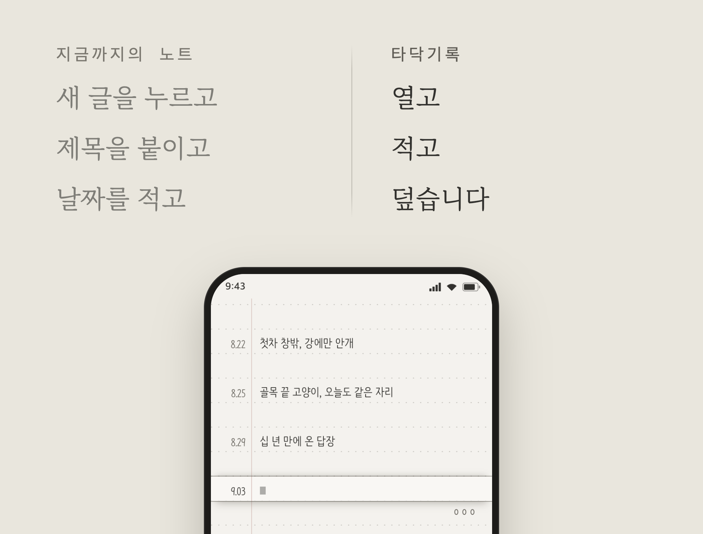

받기
iOS
아이폰 · 아이패드
준비 중
Mac
맥. 지금은 브라우저 웹앱으로 쓸 수 있습니다
준비 중
Windows
윈도우 PC. 지금은 브라우저 웹앱으로 쓸 수 있습니다
준비 중
한눈에
기계식 타자기의 감성과, 움직이거나 가려지지 않는 입력 자리로 「쓰기」 자체에 집중하게 합니다.
복잡한 기능 대신 간결함과 쉬운 사용으로 「기록」을 습관처럼 이어 가게 합니다.
앱을 열면 바로 기록할 수 있고, 날짜는 자동으로 함께 남습니다.
수첩별로 내용을 나눠서 기록하고 찾을 수 있습니다.
기록은 내 기기 안에만 저장되어, 외부로 공유되지 않습니다.
어떤 제품인가요
01
타자기처럼, 쓰는 줄은 늘 그 자리에
쓰는 곳이 움직이거나 가려지지 않습니다. 글이 쌓이면 종이가 올라갑니다. 기록 자체에 집중하며 가볍게 기록합니다.

02
기록을 이어 가게 하는 간편함
복잡한 기능은 기록하는 습관을 오래가지 못하게 합니다. 더 단순하고 간편하게, 기록의 본질에 집중할 수 있게 합니다.
“앱을 열면 바로 입력할 수 있고, 날짜는 자동으로 기록됩니다.”

03
내용을 분류해서 수첩별로 정리합니다
일상기록, 올해 목표, 아이디어, 꼭 기억할 일 등. 원하는 수첩을 만들고, 쉽게 오가며 기록합니다.

04
지난 기록을 검색하고 돌아봅니다
내가 썼던 기록을 쉽게 찾고, 되돌아볼 수 있습니다. 수첩별로 나의 글을 검색하고, 날짜별로 지난 날을 돌아볼 수도 있습니다.

최근 소식
쓰는 법
기록
- 입력하고 싶은 줄을 누르거나, 종이를 끌어 그 줄을 입력창에 맞추세요.
- 그대로 입력하세요. 날짜는 자동으로 기록됩니다.
- 그만 쓰고 싶으면 빈 부분을 누르세요.
- 하단의 버튼으로 쓰기 / 읽기 / 쓰기금지 모드를 바꿀 수 있습니다.
읽기에 집중하고 싶을 땐 「쓰기금지 모드」로 전환하세요. 쓰기금지 모드에서는 탭을 해도 입력창이 나타나지 않습니다.


수첩별로 기록하기
일상, 목표, 아이디어처럼 수첩을 나눠 적을 수 있습니다.
- 하단의 수첩 아이콘을 누르면 수첩판이 펼쳐집니다.
- 수첩을 두 번 누르면 그 수첩으로 갈아탑니다.
- 새 수첩은 이름만 적으면 바로 펼쳐집니다.


찾기
현재 선택한 수첩의 기록을 찾을 수 있습니다.
- 하단의 돋보기 아이콘을 누르고 찾을 말을 적으세요.
- 그 말이 적힌 줄이 날짜와 함께 모입니다.
- 한 줄을 누르면 그 날 그 줄로 갑니다.
- 지난 날 목록에서 날짜를 눌러 바로 갈 수도 있습니다.


글씨체 · 종이 변경하기
원하는 글씨체, 종이 색, 형태 등을 고를 수 있습니다.
- 하단의 설정 아이콘을 누르세요. 설정판이 펼쳐집니다.
- 글씨체와 글자 크기, 종이의 색과 줄을 고르세요.
- 고르는 대로 종이가 바로 바뀝니다.
- 진동은 하단의 진동 아이콘으로 켜고 끕니다.